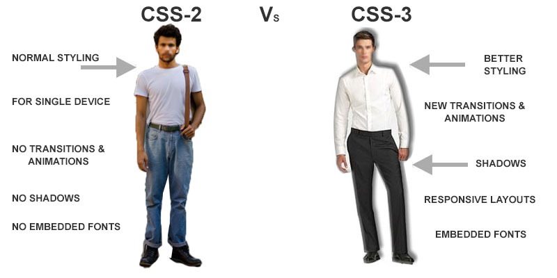

CSS3
IDEAS CLAVE
- Border-Radius: Permite crear esquinas redondas
- Box-Shadow: Crea sombreados dentro de los elementos HTML
- Text-Shadow: Similar a Box-shadow pero esta vez con textos
- Font-Face: Permite cargar y usar cualquier fuente guardado en la carpeta font
- Linear-Gradient: Genera una gradiente de manera lineal utilizando 2 colores
- Radial-Gradient: Similar a Linear-Gradient pero funciona de manera circular
- Outline: Permite crear un segundo borde alejado del primer borde de un elemento
- Border-Image: Similar a border, permite crear un borde pero utilizando una imagen
- Transform: Esta propiedad permite manipular la forma de un elemento HTML
NOTAS DE LA CLASE
En un intento por reducir el uso del codigo JavaScript y para estandarizar funciones populares,
se implemento un nuevo sistema de CSS, llamado CSS3, que no solo cubre el diseño y el estilo
web sino tambien la forma y el movimiento.
Permite crear esquinas redondas, sombreados hasta transformaciones y reposicionamiento de los
elementos html.
Este nivel de cambio convierte CSS en una tecnologia practicamente inedita comparada con versiones anteriores.
Los ejemplos mas utilizados de CSS3 son:
- Border-radius
- Box-Shadow
- Text-Shadow
- Font-Face
- Linear-Gradient
- Radial-Gradient
- RGBA
- Outline
- Border Image
- Transform
